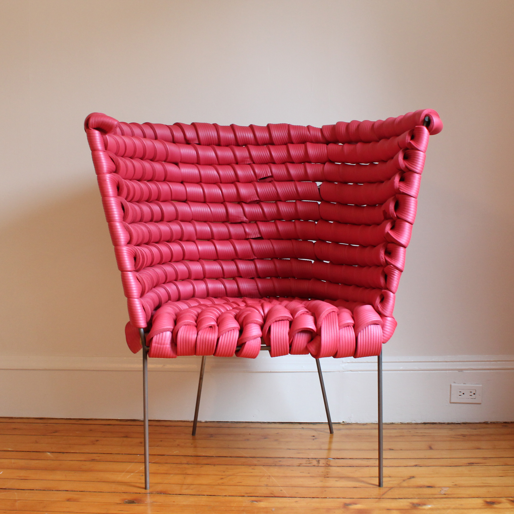

the challenge: design a chair with upholstery.
we upholster chairs for comfort, warmth, and luxury. we usually hide the seams and tuck the foam away.
meanwhile, the squish chair examines the purpose and properties of upholstery and exposes what is usually hidden. the design process, then, began with a search for soft materials that can be exposed and kept clean. the solution was yoga mats.
to celebrate the insulating aspect of yoga mats' foam, the squish chair was designed to offer sitters privacy while working. thus, the chair's dimensions offer physical shelter from the sitter's environment through its flexible walls.
process photos are shown below.
this wooden mockup was built to determine reasonable dimensions for the leg height, seat and back width, and "wingspan".
a preliminary idea for the seat and back was using armature wire as the structure and wrapping yoga mat pieces around it.

after determining that wood may not be the sleekest or visually cohesive frame material, i learned to bend, roll, and cut cold-rolled steel rod to prepare the pieces for welding.
matt lim, the welding master in this project, tests out the dimensions of the chair after spot welding.
yoga mats are cut into strips for wrapping.
the nearby nasa studio had some vinyl tubing laying around, which turned out to be a fantastic replacement for armature wire as flexible yet weight-resistant structure for the chair. after some experimentation with riveting, a robust system for wrapping the mats around the vinyl tubing and securing it to the metal frame was devised.
this shows a side view of the completed chair.
this shows a closeup of the foam.

this shows a front view of the completed chair.